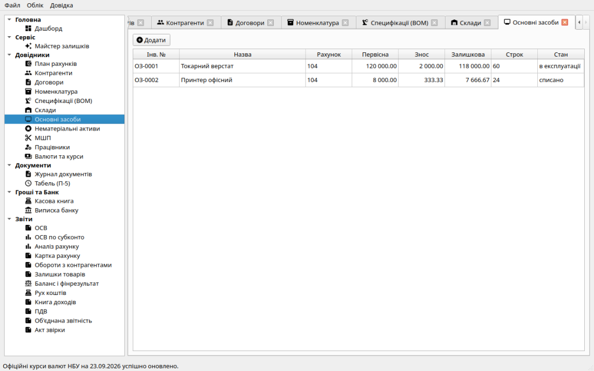
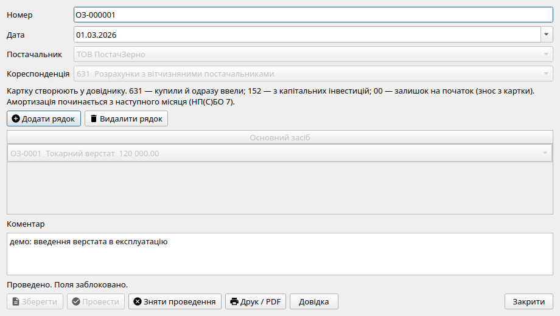
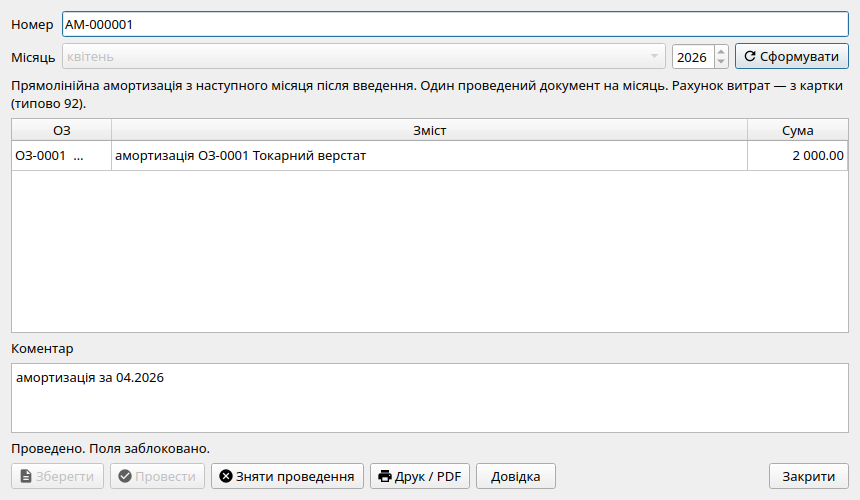
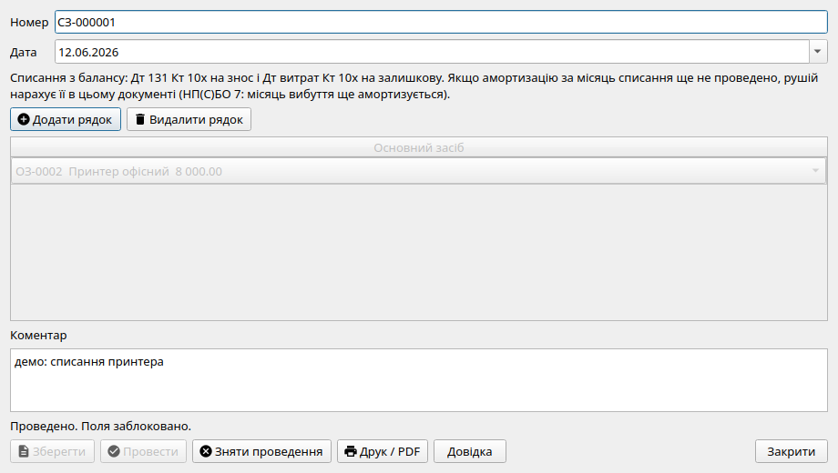

Облік основних засобів (НП(С)БО 7)
Модуль обліку необоротних матеріальних активів у системі «Фінік» реалізований у суворій відповідності до Національного положення (стандарту) бухгалтерського обліку НП(С)БО 7 «Основні засоби».

Розділ «Основні засоби»: перелік інвентарних карток, рахунок обліку, первісна вартість, нарахований знос, залишкова вартість та статус об'єкта.
План рахунків та структура обліку
- 104 «Машини та обладнання»: виробниче, офісне, комп'ютерне обладнання, техніка, прилади.
- 105 «Транспортні засоби»: легкові та вантажні автомобілі, спецтехніка.
- 109 «Інші основні засоби»: офісні меблі, інвентар вартістю вище вартісного критерію ОЗ.
- 131 «Знос основних засобів»: накопичена амортизація (контрактивний регулюючий рахунок; у Балансі показується у дужках і віднімається від первісної вартості).
- 152 «Придбання (виготовлення) основних засобів»: рахунок капітальних інвестицій для накопичення витрат на купівлю, доставку та монтаж до введення в експлуатацію.
Життєвий цикл основного засобу
1. Створення картки об'єкта ОЗ
У розділі навігації «Основні засоби» натисніть кнопку «Створити картку»:
- Інвентарний номер: унікальний номер об'єкта;
- Найменування: точна назва моделі, марка, серійний номер;
- Рахунок обліку: 104, 105 або 109;
- Строк корисного використання: строк експлуатації у місяцях;
- Первісна та ліквідаційна вартість: вартість придбання з урахуванням витрат на монтаж та очікувана вартість після закінчення експлуатації;
- Рахунок витрат амортизації: зазвичай рахунок 92 (адміністративні витрати).
2. Введення в експлуатацію
Документ «Введення в експлуатацію ОЗ» переводить об'єкт у робочий стан і формує балансові проводки:
- Дт 104/105/109 Кт 152: якщо витрати попередньо акумулювалися на рахунку капітальних інвестицій через документ «Надходження послуг» або товарне надходження;
- Дт 104/105/109 Кт 631: пряме оприбуткування від постачальника;
- Дт 104/105/109 Кт 00: внесення початкових залишків раніше куплених ОЗ на дату старту роботи в програмі (при цьому початковий накопичений знос відображається проводкою Дт 00 Кт 131).
- Друкована форма: офіційний Акт введення в експлуатацію основних засобів.

Форма введення в експлуатацію: вибір картки ОЗ, рахунку кореспонденції та введення в активний облік.
3. Щомісячне нарахування амортизації
Документ «Амортизація ОЗ» створюється наприкінці кожного звітного місяця:
- Згідно з п. 29 НП(С)БО 7, нарахування амортизації починається з місяця, наступного за місяцем введення об'єкта в експлуатацію.
- Розрахунок ведеться прямолінійним методом: щомісячна сума =
(Первісна вартість - Ліквідаційна вартість) / Строк у місяцях.
- Проводка: Дт 92 (витрати) Кт 131 (знос).
- В останній місяць встановленого строку експлуатації рушій автоматично списує копійчаний залишок, доводячи суму накопиченого зносу точно до амортизованої вартості.
- Друкована форма: Розрахункова відомість нарахування амортизації ОЗ.

Відомість амортизації ОЗ: автоматичний розрахунок щомісячного зносу за всіма діючими картками.
4. Вибуття та списання основних засобів
У разі ліквідації, фізичного зносу, поломки або непридатності до подальшої експлуатації оформлюється документ «Списання ОЗ»:
- За правилами НП(С)БО 7 нарахування амортизації припиняється з місяця, наступного за місяцем вибуття. Якщо за поточний місяць амортизація ще не нараховувалася, документ списання автоматично донараховує амортизацію за місяць списання!
- Проводки списання:
- Дт 131 Кт 104/105/109 — списання накопиченого зносу об'єкта;
- Дт 92 (інші витрати) Кт 104/105/109 — списання залишкової вартості (якщо об'єкт не був замортизований повністю до кінця).
- Картка об'єкта переходить у неактивний статус «Списано» і більше не бере участі в наступних розрахунках амортизації.
- Друкована форма: типовий Акт списання (ліквідації) основних засобів.

Діалог списання ОЗ: розрахунок остаточного зносу та списання залишкової вартості на витрати підприємства.